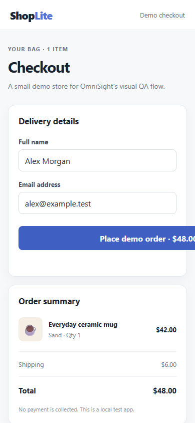

Before · CTA overflow
167px
Reproduced on mobile
OmniSight reproduced a checkout button clipped on mobile, created a constrained CSS proposal, and verified it in an isolated browser sandbox. This demonstrated run used the deterministic mock AI provider; the Gemini adapters are implemented, but a successful live Gemini run still needs a rotated key and available quota.
ShopLite checkout · 390 × 844 mobile viewport · Dashboard E2E with mock AI
The demo starts with a deliberately broken checkout so the repair can be measured.

At 390px wide, the order button extends outside its card. Desktop remains healthy, so the fix must improve mobile without regressing desktop.
Clipped element detected at #place-order. The deterministic mock adapter exercises structured finding validation without contacting Gemini.
The proposal passed the approved-path and exact-source checks before sandbox validation.
Four observable stages, with a human approval boundary before sandbox validation.
Playwright records desktop and mobile screenshots plus page evidence.
The mock adapter returns a structured clipped-action finding from the captured page evidence.
A constrained patch is checked for approved path, exact match and size.
Docker checks the proposal in a disposable, resource-limited container.
A focused proof of concept with clear boundaries.